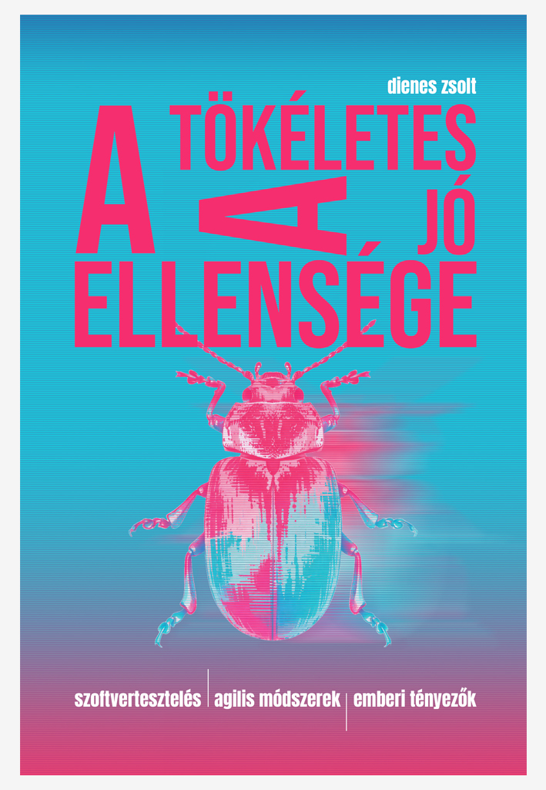
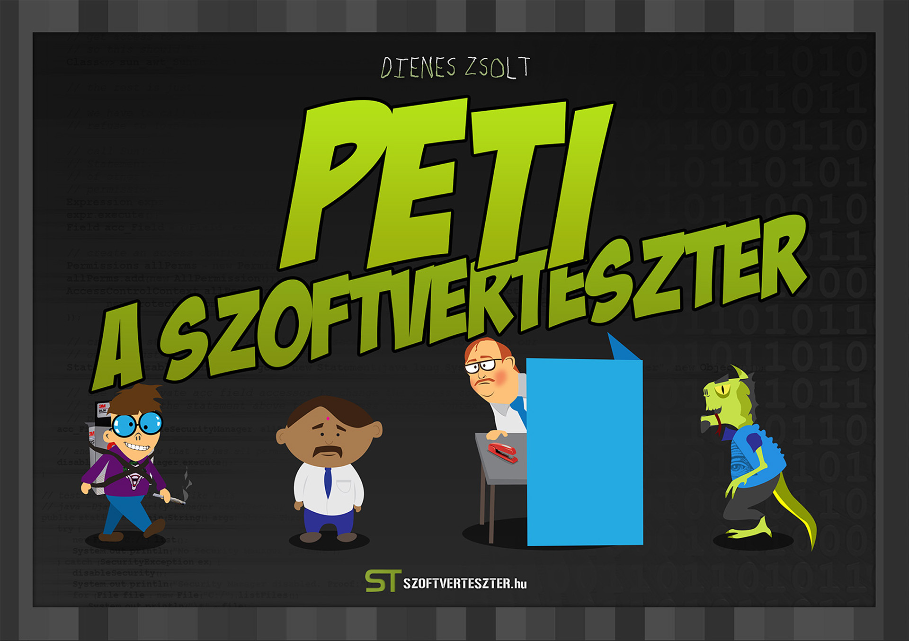
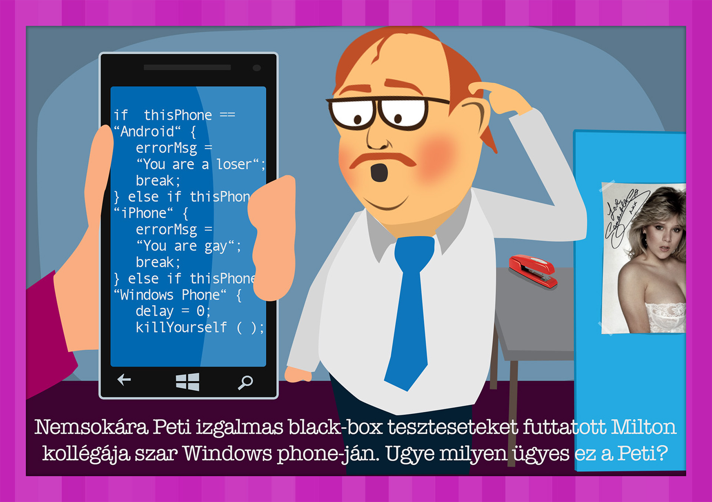
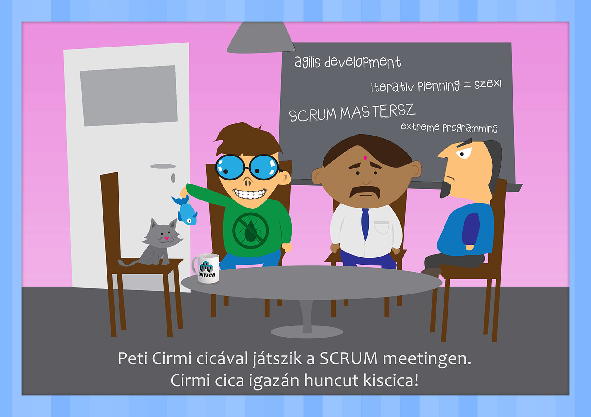
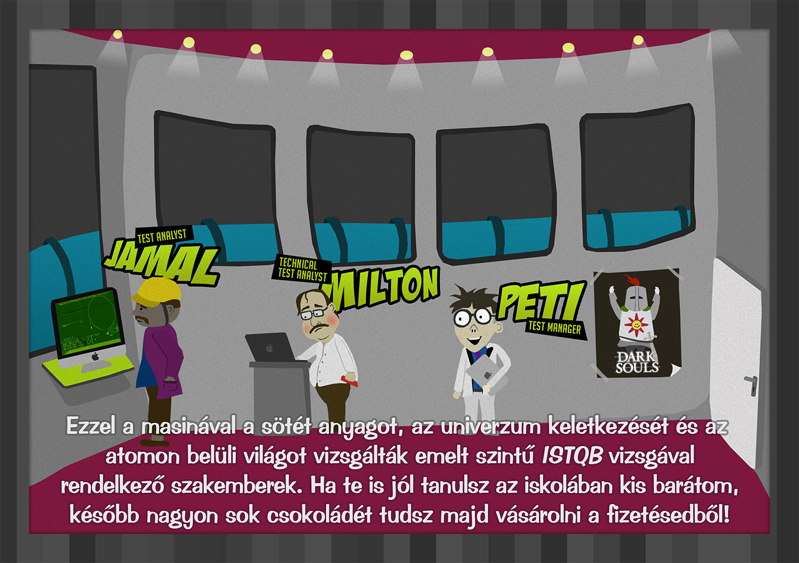
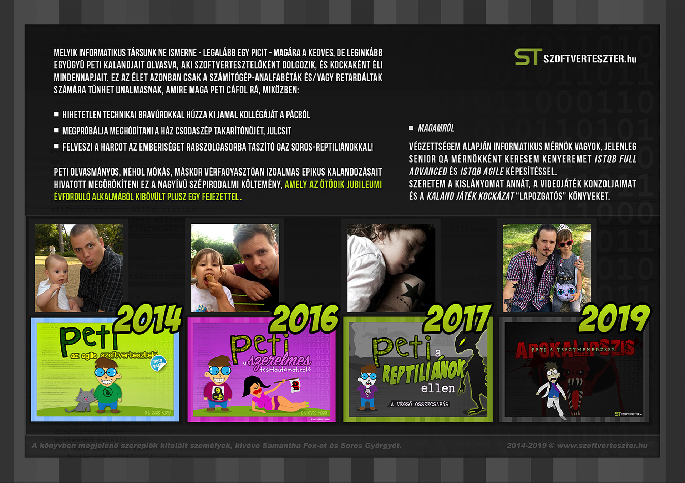
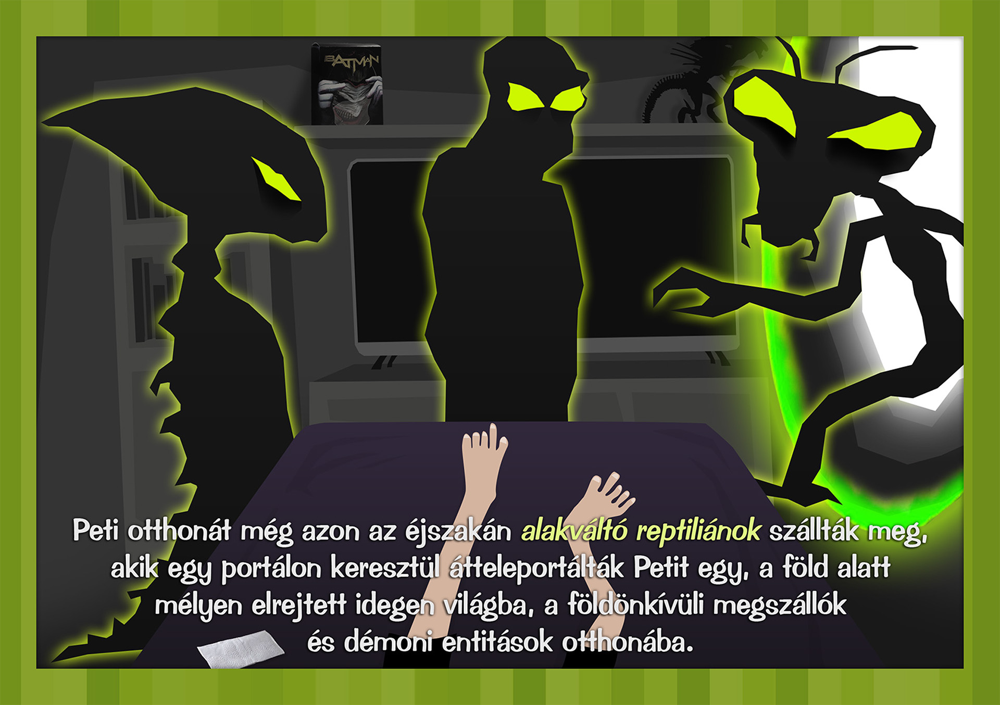
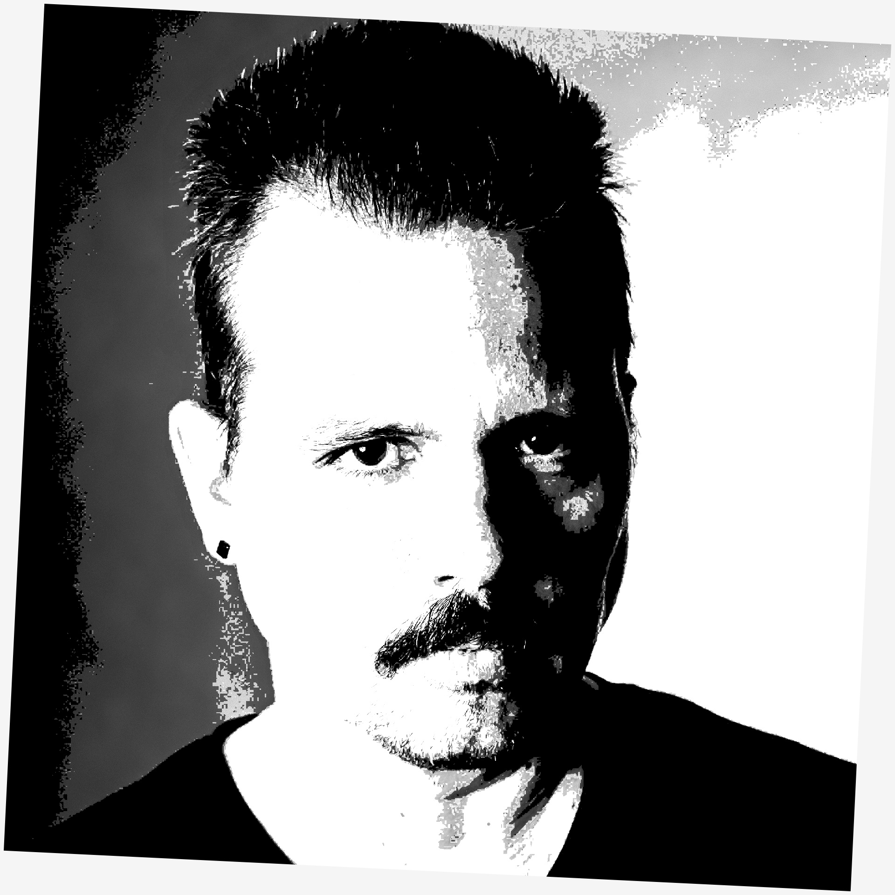

A tökéletes a jó ellensége (2026)

szoftvertesztelés | agilis módszerek | emberi tényezők
Javában készül a szoftvertesztelésről és agilitásról szóló könyvem "A tökéletes a jó ellensége" címmel.
A tartalomból:
- a szoftvertesztelés története
- a szoftvertesztelés alapjai
- validáció és verifikáció
- a hibák okainak a feltárása
- agilis módszertanok
- lean és kaizen
- motiváció
- fókuszált munkavégzés
Részletek hamarosan!
Peti a szoftverteszter (2019)
leírás
A Peti a szoftvertesztert akkor készítettem, amikor a kislányom egy éves volt, és emiatt elég sok, hasonló formátumú (néhány oldalas, kemény lapokból álló) gyerekköny került a kezeim közé. Főhőse egy Peti nevű srác, aki folyamatosan lépked felfelé a tesztelői ranglétrán - manuális tesztelőből automatizált mérnök, majd tesztmenedzser lesz, végül pedig a civilizációnkkal együtt ő maga is elhalálozik. Az olvasáshoz vidámságban gazdag perceket kívánok!






Eme gyűjteményes digitális kiadvány négy minitörténetet tartalmaz, melyek közül az első, a Peti, az agilis szoftvertesztelő 2014-ben készült, ezt követte a Peti, a szerelmes tesztautomatizáló (2016), a Peti a reptiliánok ellen (2017), majd az ötéves évforduló alkalmából megkapta a lezárást is, Peti a tesztmenedzser: Apokalipszis címmel (2019).
Letölthető magyar és angol nyelven!
Peti a szoftverteszter - magyar változatPetey the Software tester - english version
- formátum: PDF
- oldalszám: 46
- méret: 20 MByte
személyes
bemutatkozás
Hello world, én Dienes Zsolt vagyok, 15+ éve tesztmérnökként tevékenykedem (korábban: NetPincer, Magyar Telekom, OTP Mobil, jelenleg: Graphisoft), Full Advanced ISTQB minősítéssel. Dolgoztam különböző szoftverfejlesztési módszertanban (vízesés, Kanban, Scrum) és különböző szerepkörökben (manuális tesztelés, automatizálás, oktatói tevékenység ISTQB Foundation és Agile tanfolyamokon). Ismerem és tisztelem az Agilis Kiáltvány, valamint a lean alapértékeit, és nagyon szeretem a nutellát.
- ISTQB Foundation
- ISTQB Agile Tester
- ISTQB Test Automation Engineer
- ISTQB Test Analyst
- ISTQB Technical Test Analyst
- ISTQB Test Manager
- ISTQB Full Advanced
